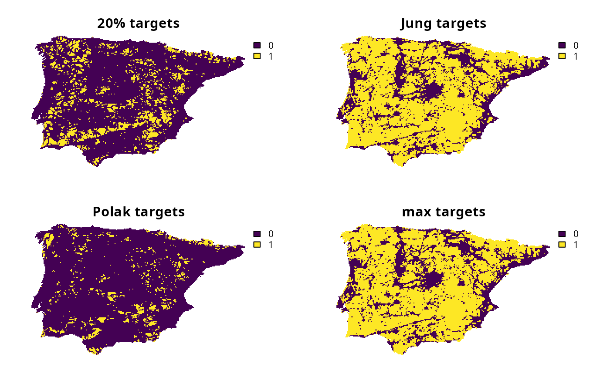

Specify targets that are calculated based on the maximum of one or more target setting methods.
Value
An object (Method) for specifying targets.
Data calculations
This function involves calculating targets based on the spatial extent
of the features in x.
Although it can be readily applied to problem() objects that
have the feature data provided as a terra::rast() object,
you will need to specify the spatial units for the features
when initializing the problem() objects if the feature data
are provided in a different format. In particular, if the feature
data are provided as a data.frame or character vector,
then you will need to specify an argument to feature_units when
using the problem() function.
See the Examples section of the documentation for add_auto_targets()
for a demonstration of specifying the spatial units for features.
See also
Other target setting methods:
spec_absolute_targets(),
spec_area_targets(),
spec_duran_targets(),
spec_interp_absolute_targets(),
spec_interp_area_targets(),
spec_jung_targets(),
spec_min_targets(),
spec_polak_targets(),
spec_pop_size_targets(),
spec_relative_targets(),
spec_rl_ecosystem_targets(),
spec_rl_species_targets(),
spec_rodrigues_targets(),
spec_rule_targets(),
spec_ward_targets(),
spec_watson_targets(),
spec_wilson_targets()
Examples
# \dontrun{
# set seed for reproducibility
set.seed(500)
# load data
sim_complex_pu_raster <- get_sim_complex_pu_raster()
sim_complex_features <- get_sim_complex_features()
# create base problem
p0 <-
problem(sim_complex_pu_raster, sim_complex_features) %>%
add_min_set_objective() %>%
add_binary_decisions() %>%
add_default_solver(verbose = FALSE)
# create problem with 20% targets
p1 <-
p0 %>%
add_auto_targets(method = spec_relative_targets(0.2))
# create problem with Jung et al. (2021) targets
p2 <-
p0 %>%
add_auto_targets(method = spec_jung_targets())
# create problem with Polak et al. (2015) targets
p3 <-
p0 %>%
add_auto_targets(method = spec_polak_targets())
# create problem with targets based on the maximum of 20% targets,
# Jung et al. (2021) targets, and Polak et al. (2015) targets
# for each feature (separately)
p4 <-
p0 %>%
add_auto_targets(
method = spec_max_targets(
spec_relative_targets(0.2),
spec_jung_targets(),
spec_polak_targets()
)
)
# solve problems
s <- c(solve(p1), solve(p2), solve(p3), solve(p4))
names(s) <- c("20% targets", "Jung targets", "Polak targets", "max targets")
# plot solutions
plot(s, axes = FALSE)

# }